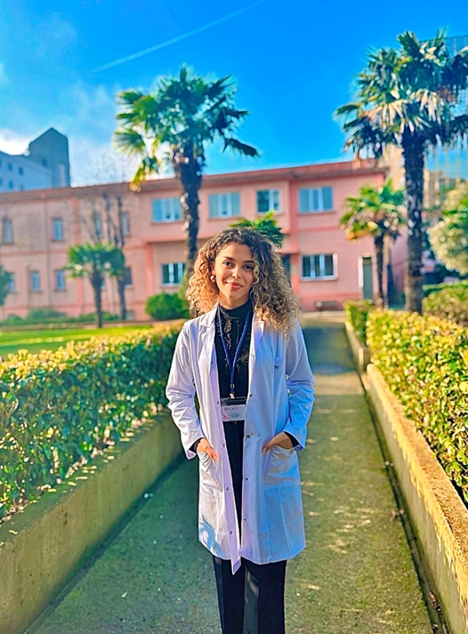

Psikoloji lisans eğitimini tamamladıktan sonra, klinik psikoloji yüksek lisans programını bitirerek bu
alandaki uzmanlığını sürdürmüştür. Eğitim süreci boyunca, özellikle psikodinamik kuram başta olmak üzere
çeşitli terapi yaklaşımlarına yönelik kuramsal bilgiler edinmiş ve uygulamalı süpervizyon temelli
çalışmalar
gerçekleştirmiştir. Mesleki pratiğinde, bireylerin psikolojik süreçlerini bilimsel ve etik ilkeler
doğrultusunda ele alarak, duygusal güçlüklerin anlaşılması ve çözümlenmesine yönelik yapılandırılmış bir
terapi süreci sunmaktadır.